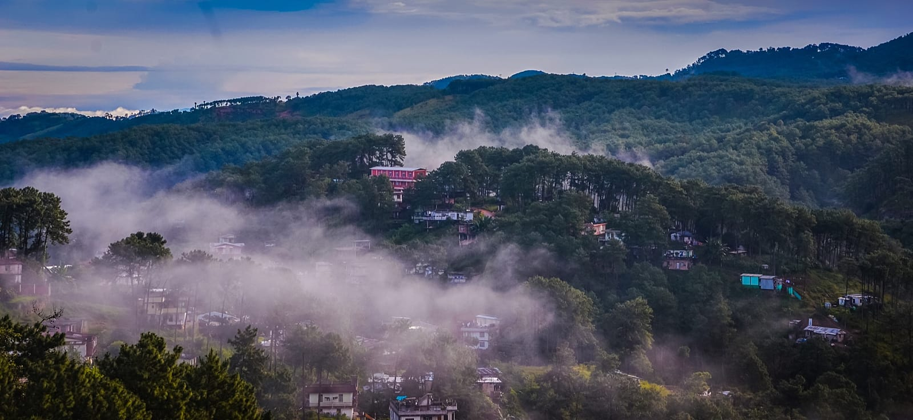
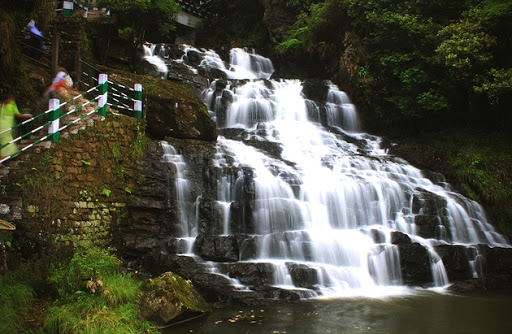
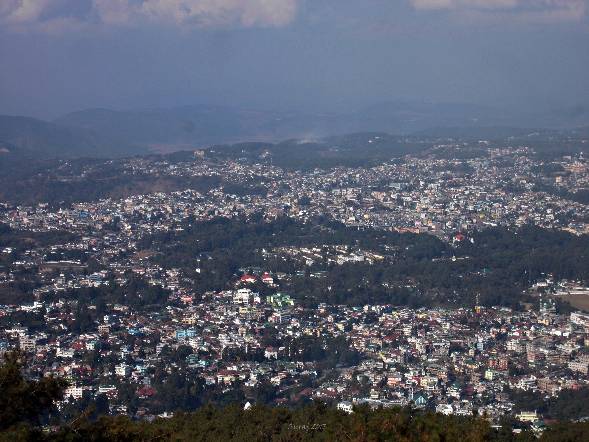

1 / 3
Caption one
2 / 3

Caption Two
3 / 3

Caption Three
3 / 3

Caption four
3 / 3

Caption five
Nestled in the abode of clouds, Shillong in Meghalaya is listed top among the best places to visit in India during monsoon. Known for its captivating beauty, the hill town looks all the more amazing during the monsoons. If you do not mind getting drenched, this place is a perfect getaway. Misty clouds, lush green everywhere and roaring waterfalls are the reasons for visiting. During the rainy season, you must visit the Elephant Falls and the Spread Eagle Falls. Both of these waterfalls fed by rains make for a remarkable sight. The blissful feel of the town relaxes your senses. Food, specially the local delicacies and the cheap drinks sets the pace for a pleasant holiday.
Shillong is a hill station in northeast India and capital of the state of Meghalaya. It’s known for the manicured gardens at Lady Hydari Park. Nearby, Ward’s Lake is surrounded by walking trails. North, the Don Bosco Centre for Indigenous Cultures features displays on the region’s native people. Waterfalls include the Elephant Falls to the southwest. East of here, forested Shillong Peak offers city views.
The best time for Shillong tour is from the months of September to May. During these months, the weather is extremely pleasant with moderate rainfall. Shillong looks beautiful and invigorating during the monsoon season, but torrential rain may disrupt travel plans. So, June to August is certainly the best time to visit Shillong for those who wish to embrace the magic of rainfall.
Surrounded by thick coniferous forests and East Khasi Hills, Umiam Lake is one of the most beautiful places to visit in Shillong. Popular as Badapani, this is a sprawling man-made water body, formed by damming Umiam River. The lake is dotted with few small islands and the adjoining Lum Nehru Park is an ideal place for strolling and picnic.